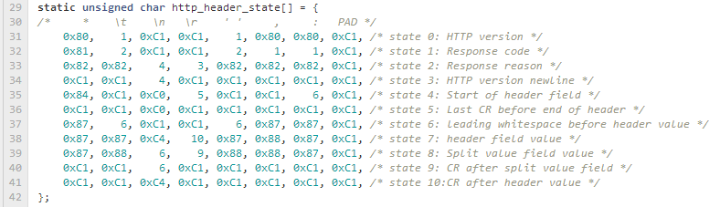
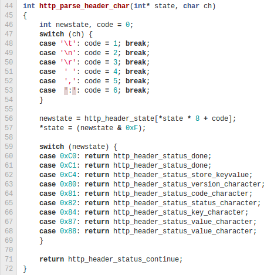

tinyhttp - A minimal HTTP response parser
I’ve finally found some time to cleanup and package the C-based HTTP parser we use for AirMech.
One of the main goals was to have as minimal an implementation as possible, with no dependencies. Well, I cheated and used memcpy and tolower from <string.h> and <ctype.h>. It’s also written so it will compile either as C89 code or embedded as C++98 code (I’m looking at you Visual Studio).
The real meat of the parser handles HTTP headers and the chunked transfer-encoding scheme. The implementation makes extensive use of compact lookup tables to drive the overall parsing machine. These parsers have minimal state (an integer) and work on a single character at at time.

The HTTP header table has 2 parts. First, each row of the table corresponds to a state in the parsing machine. Second, the incoming character is mapped to a character class in the range 0-6. Zero as a catch-all character class, since only a few characters can actually drive transitions in the state machine. The intersection of the current parsing row state along with the column mapped to the character class gives the opcode to process.
An opcode contains 2 separate pieces of information: the next parser state and the semantics of the character. The next state obviously drives the row to use for parsing subsequent characters. The semantic value of the character is important for determining what to do with the character; is it a part of a header key/value pair, part of the status code or something else? Unfortunately the target state alone is ambiguous for semantics. Rather than complicate the encoding with both source and target states, the table simply builds unique values for each semantic case ensuring that the lower four bits of each entry map to the target state index.

In addition, http.h defines a wrapper to drive the two
parsers and pull out the bits that are critical to handling the response
body (such as Content-Length and Transfer-Encoding). Because you’re not
likely to be reading data from the network one character at a time,
this wrapper takes a block of data and parses as much as it can, feeding
you raw body data as it goes.
The inspiration for this style of parser comes from the Flexible and Economical UTF-8 Decoder by Bjoern Hoehrmann, which turned my view of parsers upside down when I first saw it. It’s definitely worth a read as a welcome reprieve from the myriad of bloated, over-engineered UTF-8 projects.
The entire project has been uploaded to my github space under https://github.com/mendsley/tinyhttp. The code is available under the permissive BSD license, which means you’re able to use it in proprietary software.
Because this was built to address the specific need of handling web traffic for AirMech, the only features are the ones we needed. Feel free to make suggestions and submit changes via github.